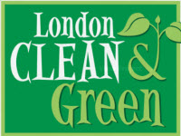

In 1996, London Clean & Green originated as a single-day event aimed at gathering volunteers to clean up litter and graffiti in downtown London. Over the years, that event has grown and expanded into a citywide community project that includes hundreds of individual volunteers and involves many community & business groups and the City of London.
Get Involved
Today, London Clean & Green still organizes the very successful community clean-ups scheduled around Earth Day in April each year, but goes further to promote events and activities in the springtime months that improve the environmental well being of our community!
Londoners want to be informed, connected and engaged. Now you can easily find information and have your say on range of City initiatives.